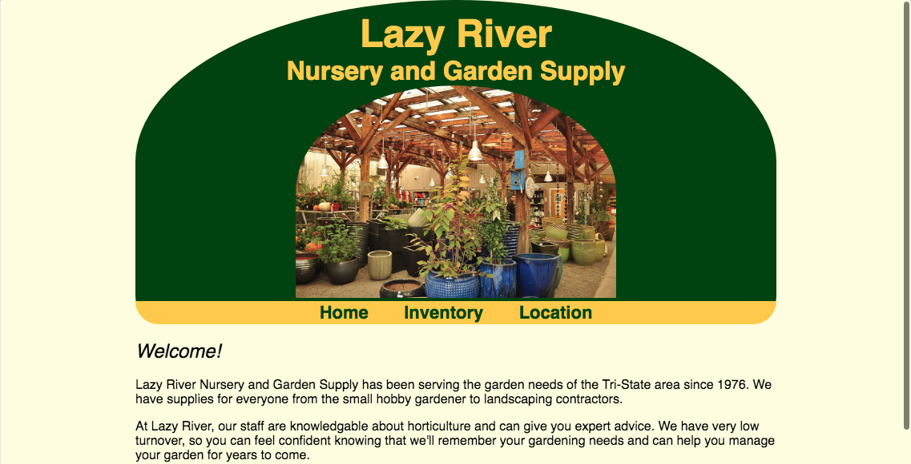

My Background
Software and Web developer with over 10 years of Technology Support experience (including helpdesk, networking, VoIP, CCTV). I also offer technical and creative writing services to meet all your professional needs.
Development Portfolio
PHIGGit - Rails app

Querulous - Q&A

Lazy River - glitch project

Happy Valley - glitch project

See the Pen CSS backgrounds by Joanna I. Davidson (@joannadavidson) on CodePen.
Joanna I. Davidson
Durham, NC | joanna@shrikesong.com |
Purpose
Creative professional and eager learner seeking to employ knowledge of Ruby on Rails and agile development along with experience focusing on end user satisfaction into a software development career.
Technical Experience
- 2013–2015
- Galloway Ridge at Fearrington | Pittsboro, NC
- IT Support Specialist
- 2007–2011
- SHOE SHOW, INC. | Concord, NC
- Technology Specialist
- 2006–Present
- Technology Consultant
- Self-employed
Education
- 2018
- Momentum Learning | Durham, NC
- Dedicated 12-weeks specializing in highly focused, immersive training centered on language fluency, object-oriented programming, and project-based learning.
- 1995–1998
- Catawba College | Salisbury, NC
- Pursued Political Science and Communication Arts.
Certifications
Other Work Experience
- 2017–Present
- Treehouse Literary Magazine | Durham, NC
- Poetry Editor
- 2017–2018
- S&H Youth and Adult Services | Salisbury, NC
- Medical Records Specialist
- 1997–2007
- Rowan Public Library | Salisbury, NC
- Library Assistant
- 2000–2002
- Novant Health - Rowan | Salisbury, NC
- Medical Records Specialist
Memberships & Boards
- 2014–Present
- North Carolina Poetry Society
- Member
- 2015–Present
- North Carolina Writers' Network
- Member
- 2004–2007
- Salisbury Parks & Recreation Advisory Board
- Member
- 2003–2005
- Metrolina Library Association | Board of Directors
- Director of Public Libraries